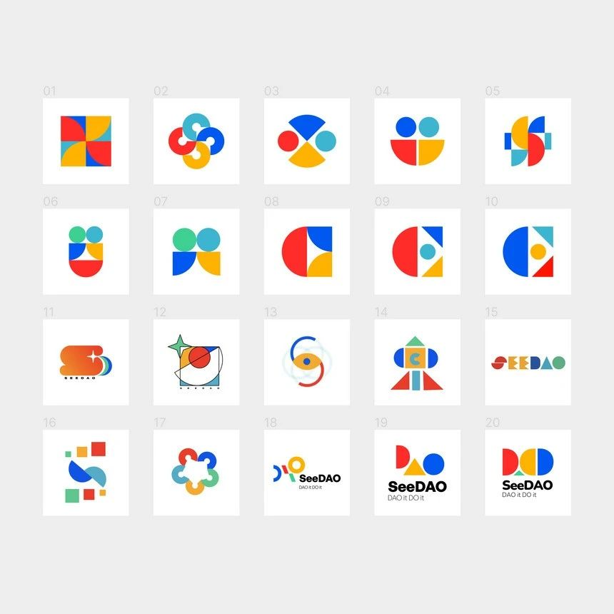

投票选 Logo！SeeDAO 新版 Logo 即将落定！
作者: SeeDAO
欢迎你走进这个新世界，一起来探索这种新型协作方式。SeeDAO 的未来由我们共同创造！

在过去一个月中，我们收到了 10 位小伙伴共计 45 件 Logo 设计，并从中挑选出 21 张进入投票环节。
本轮投票每人将有 5 张选票，获票排名前五的 Logo，将会进入决赛圈，我们将会在其中挑选出未来的新 Logo！在过程中，前 5 名 Logo 的设计者将获得 5000 点积分的奖励；最终新 Logo 的设计者，也将额外获得 10000 积分激励！（品牌小组自身参与设计的 Logo 不参与额外奖励）投票地址：
Google 表单：https://forms.gle/sf2sux6JhfZc8wRr8本次设计过程中，我们在尝试探索不同的设计方向，包括：希望这份 Logo 能够呈上启下，与 SeeDAO 共同走向数字城邦的未来！SeeDAO 是一个致力于连接 100 万 Web3 游民的数字城邦。我们的愿景是：在基于地缘的民族国家之外，在赛博世界另建一片人类的生存空间。在这片空间中，人类可以重新建立组织和连接，并逐渐将影响力辐射至现实世界。我们正经历着一个秩序崩塌的时代：各国经济情况恶化，局部战争不断。我们面临着高失业率和越来越强的外界控制。接受过高等教育的青年人找不到工作，而需要被服务的人又因为贫穷得不到帮助；精神焦虑吞噬着年轻人，但科技巨头和国家机器对个人的控制却越来越严……大家的生活似乎只剩下了内卷、摸鱼和躺平。我们认为 DAO 是一个值得探索的答案。这是我们相聚在 SeeDAO 的原因。在走向 100 万 Web3 游民数字城邦的路上，我们致力于促进社区成员的连接、流动、交换和自由；致力于帮助大家建立海内外信息流通的桥梁，帮助个人在 Web3 时代探索新的教育、协作和工作方式，帮助大家在原子化的社会构建新的人际网络。在 SeeDAO 的各位成员基于 POW 的原则进行协作，大家共同建设并共享劳动成果。目前，SeeDAO 的社区成员超过了 1 万名，贡献者超过了 800 名，核心贡献者超过了 60 名。我们欢迎各种各样的伙伴一起加入这样一份使命的实践。无论你是对 Web3 一无所知的新人，还是已经深耕多年的老兵；无论你是高校的学生，还是已经颇有工作经验的社会人；无论你是在中国、美国、欧洲，或是世界上任何一个角落；无论你现在年纪十六还是六十；更无论你的性别、肤色、人种和宗教信仰.....欢迎你走进这个新世界，一起来探索这种新型协作方式。SeeDAO 的未来由我们共同创造！